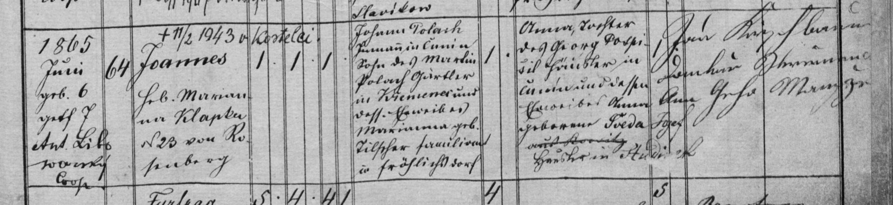

Zápisy z matrik · křest / narození
Křest Jana Poláka
Jan (Joannes), Čunín čp. 64, syn Jana Poláka, podruha v Čuníně (syna Martina Poláka, zahradníka v Křemenci, a Marianny roz. Tilšerové (?) z Veselé), a Anny, dcery Jiřího Pospíšila, domkáře v Čuníně, a Anny roz. Švedové (?). Přípisek: † 11. 2. 1943 v Kostelci.
| Datum | 6. 6. 1865 |
|---|---|
| Archiv | Moravský zemský archiv v Brně – Sbírka matrik (E 67), fara Konice |
| Svazek | N Konice 1856–1866, kniha č. 9077 (sv. XIII), oddíly po obcích |
| Snímek | 109 – otevřít na portálu Acta Publica |
| Týká se | Jan Polák1865–1943, Jan Polák1838–1915, Anna Pospíšilová1835–1905, Martin Polák* 1816, Marianna Tilšerová* ≈1812, Jiří Pospíšil, Anna Švédová |

Červeně je označené místo, ze kterého čteme. Kliknutím otevřete výřez v plném rozlišení.
Přepis originálu
[Geburtsbuch, Čunín 1865, fol. XIII/205] [Zeit der Geburt und Taufe] 1865 Juni geb. 6, getft. 7 – Ant. Libowarský (?), Coop. [Haus-Nro.] 64 [Namen des Täuflings] Joannes [nad jménem přípisek: † 11/2 1943 v Kostelci] [Hebamme] Heb. Marianna Klapka N. 23 von Rosenberg (?) [kath., Knabe, ehelich] 1 · 1 · 1 [Vater] Johann Polach, Inmann in Čunin, Sohn des Martin Polach, Gärtler in Kremenec, und dess. Eheweibes Marianna geb. Tilšar (?), Familiant in Fröhlichsdorf [Mutter] Anna, Tochter des Georg Pospišil, Häusler in Čunín, und dessen Eheweibes Anna geborne Šveda (?) [škrtnuto: aus Konitz] Häusler in St…(?) [Pathen] Jan Kříž (?), … ; Anna, Gattin (?) [čtení kmotrů nejisté]
Překlad
Jan Polák se narodil 6. června 1865 v Čuníně v domě čp. 64 a druhý den byl pokřtěn. Otec Jan Polák byl podruh (bydlel v cizím domě) v Čuníně, syn Martina Poláka, zahradníka v Křemenci, a Marianny rozené Tilšerové (?) z rodiny familianta ve Veselé (Fröhlichsdorf). Matka Anna byla dcerou Jiřího Pospíšila, domkáře v Čuníně, a Anny rozené Švedové (?). Porodní bábou byla Marianna Klapková. Pozdější přípisek nad jménem: zemřel 11. 2. 1943 v Kostelci (nejspíš Kostelec na Hané). (Familiant = usedlík na malé parcele z rozparcelovaného panského dvora; Gärtler = zahradník.)
Nejistá čtení jsou označená (?), nečitelná místa […]. Přepis si můžete ověřit na výřezu výše.